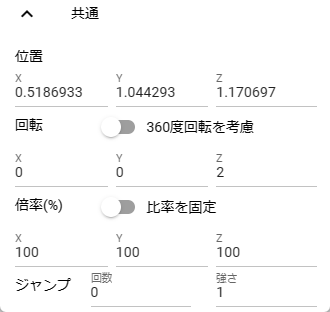

9.1. Common
9.1.1. Common (3D model)
This is a transformation property that can be used in common for 3D models.
- position:
Set the X, Y, and Z coordinates respectively.
- rotation:
Set the X, Y, and Z coordinates respectively. When
Consider 360 degree rotationis turned on, it tries to rotate as much as possible when the rotation angle is reached.- Scale:
Set the magnification for all coordinates. If you turn on
Fix ratio, you can fix the X/Y/Z coordinates and only need one input.
Note
Scale is only X/Z coordinates for Stage. Other 3D model objects are X/Y/Z coordinates.
9.1.1.1. Jump (common)
- number of times:
Specifies the number of times to jump.
- strength:
Sets the strength (the amount added to the current Y-axis).
Warning
In an animation project, if the keyframe interval is too short, it can appear to jump too quickly.
9.1.1.2. Linear sway (common)
This is a setting for the linear shaking animation effect that can be used commonly for 3D models.

- On:
Enable.
- Position, Rotation, Scale:
Type of shaking.
- X, Y, Z:
Specifies the swing direction.
- Vibration amount:
Specifies the number of shakes.
- Elasticity:
Specifies the upper limit of the bounce range when shaken.
9.1.1.3. Random shaking (common)
This is a random shaking animation effect setting that can be used commonly for 3D models.

- On:
Enable.
- Position, Rotation, Scale:
type of shaking
- strength:
Specifies the strength of shaking
- Vibration amount:
specify the number of swings
- Randomness:
Specifies the randomness of shaking
- Fade out:
Allow it to taper off when the shaking ends. (If it is off, it will end quickly.)
Warning
9.1.2. Common (2D model)
This is a transformation property that can be used in common for 2D models.

- position:
Set the X and Y coordinates as percentages. Therefore, if the screen size changes, the position may shift slightly.
- rotation:
Sets the angle of rotation for the Z coordinate only.
- Size:
Set the X and Y coordinates as the direct drawing area.
- Scale:
Set the scale of X coordinate and Y coordinate respectively. Unlike size, this one scales.